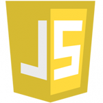
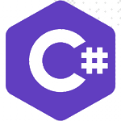

KIYOHARA KOUHEI
PORTFOLIO
清原 光平 1993年7月2日生 31歳
2018年2月頃から現在に至るまでの業務実績から、いくつかを抜粋したポートフォリオになります。
主にゲーム開発・動画編集の業務委託を行ってきました。
SKILL

Javascript
関数、オブジェクト指向、配列操作、class構文、JSON、Node.js、React、Pixi.js、Tween.js、Planck.js、SteamAPI

C#
Unityを使用。UniTask、DoTween、LitMotion、uPoolsなどのライブラリを用いた設計や、自作ライブラリの作成

Excel
関数を使用した計算、データ管理の表作成など

Word
一般的な文書作成、図表・グラフ挿入など

PowerPoint
企画説明のためのコンテ作成、絵コンテ作成など

PhotoShop
ゲーム開発、動画制作の際に必要になった素材の作成など
AfterEffects
ゲーム開発、動画制作の際に必要になった映像の作成、PremiereProとの連携など

PremierePro
動画制作の際に使用、AfterEffectsとの連携など
WORKS
Unity用ゲーム開発支援ライブラリ
Unityでゲーム開発を行うための、開発支援ライブラリの制作を行いました。
【案件先・期間】
講談社クリエイターズラボ 2024/7～2024/9（2カ月）
【役職・役割】
プログラマー
【環境・言語】
C#、自作ライブラリ
【ポイント】
■イベントコマンドシステム
Unityを使用する際に直面する大きな課題は、その「使い勝手の悪さ」です。ゲーム中の簡単なワンシーンを作成する場合でも、
Unityでは大量のC#コードを記述するか、ビジュアルスクリプティングで複雑な遷移表を作成する必要があります。
そこで、講談社様にイベントコマンド型スクリプティングシステムを提案しました。
これにより、『RPGツクール』のように、初心者でも効率的にUnityでゲーム開発が行えるライブラリを作成しました。
■ユーザー目線に立ったライブラリ開発
納品したライブラリを使用するユーザーの立場に立ち、いかにシンプルで効率的に開発を進められるかを重視して、ライブラリの開発を行いました。

ライトノベル原作 アニメ化宣伝用ゲーム開発
アニメ「真の仲間じゃないと勇者のパーティーを追い出されたので、辺境でスローライフすることにしました」の宣伝用PCゲーム開発プロジェクトです。
【案件先・期間】
KADOKAWA
アーリーアクセス版 2020/6～2022/7（25カ月）
完成版 2022/7～2023/10（15カ月）
【役職・役割】
プロジェクトリーダー / メインプログラマー
【環境・言語】
Javascript、Node.js、Pixi.js、Tween.js、SteamAPI
【データ管理】
JSON、Excel
【ポイント】
■プロジェクトリーダー
初めてのプロジェクトリーダーとして、企画の立ち上げから開発スケジュールの管理、メンバーへのタスク指示、必要素材の調達まで、プロジェクト全体を通じた包括的な管理を担当しました。
プロジェクトを滞らせることなく、スムーズな進行を実現し、チーム全体の生産性向上に貢献しました。
■多国言語対応を行い、オプションから言語切り替えを実装
ExcelデータをJSON形式に変換し、ユーザーがオプションメニューから言語を選択できるように設計・実装しました。
この機能はユーザーの利便性を向上させ、国際的なプレイヤー層を広げる役割を果たしました。
■SteamAPIを導入し、Steam実績を実装
開発中に、Node.jsとの互換性の問題により通知表示が正常に機能しないトラブルに直面しましたが、APIのソースコードを分析し、
迂回策を考案して問題を解決しました。この経験を通じて、技術的な課題を迅速に解決する能力を高めました。
■JSONでのデータ管理
ゲーム内のデータ管理について、言語ごとのテキストやクラフトシステムの配合情報をJSON形式で管理しました。柔軟で拡張性のある設計を行い、今後のアップデートにも対応可能なシステムを構築しました。
このアプローチにより、効率的なデータ管理が可能となり、プロジェクトの開発スピードと品質向上に寄与しました。

コミック原作 宣伝用ゲーム開発
コミック「天国大魔境」の宣伝用に、ドワンゴが運営するゲームアツマールというサイトでのブラウザゲーム開発プロジェクトです。
【案件先・期間】
株式会社ドワンゴ 2019/5～2019/10（5カ月）
【役職・役割】
メインプログラマー / UI/UX
【環境・言語】
Javascript、Node.js、Pixi.js、AtsumaruAPI
【データ管理】
JSON
【ポイント】
■三角関数を多用したシステム
スマートフォン対応のアクションゲームの設計において、操作部分やアクションの挙動に三角関数（sin、cos、tan）を多く活用しました。
これにより、実務で三角関数の使い方を改めて復習し、数学的知識を実際のシステム設計に応用するスキルを磨きました。

コミック原作 アニメ化宣伝用ゲーム開発
コミック「邪神ちゃんドロップキック」のアニメ化放送に合わせ、ドワンゴが運営するゲームアツマールというサイトでのブラウザゲーム開発プロジェクトです。
【案件先・期間】
株式会社ドワンゴ 2018/2～2018/12（10カ月）
【役職・役割】
メインプログラマー / UI/UX
【環境・言語】
Javascript、Node.js、Pixi.js、AtsumaruAPI
【データ管理】
JSON
【ポイント】
■ユーザー間のランキングシステムの実装
ドワンゴが提供する、AtsumaruAPIを導入しユーザー間によるゲーム内ランキングシステムを実装しました。
■ユーザーへの再帰性、射幸心の提供
本ゲームにはサーバータイムを使用したリアルタイム時間経過によるスタミナ制を導入。
また、キャラクターやアイテムをガチャで引く流行を取り入れたゲーム設計を行い、ユーザーのプレイ再帰性や射幸心による中毒性などを意識した開発を行いました。
プロモーション動画制作
過去の業務実績をまとめました。画像をクリックで抜粋一覧の別ページに移動します。
【案件先・期間】
株式会社ドワンゴ 2018/2～2020/5
KADOKAWA 2021/11
【環境・ツール】
PhotoShop、AfterEffects、PremierePro、PowerPoint
【ポイント】
■絵コンテからのすり合わせ
クライアントの意見を汲み取りながらPowerPointで絵コンテを作成し、すり合わせを行っていました。
■AfterEffectsを駆使した演出
見ていて飽きずインパクトのある動画を制作するため、AfterEffectsで様々なエフェクト効果を取り入れていました。

Vtuber Youtube動画制作
企業所属Vtuberタレントの動画編集・サムネイル作成を担当しました。
（※守秘義務のため、タレント名は伏せさせていただきます。）
【案件先・期間】
株式会社Xeno 2018/4～2018/10
【環境・ツール】
PremierePro、AfterEffects、PhotoShop、PowerPoint
【ポイント】
■クライアントとのコミュニケーション
動画を編集するにあたって、クライアントからタレントの「強み」や「推していきたい部分」を予め聞き出し、それを最大限活かせるよう常に心掛けていました。
自分が担当した動画の中で最も視聴回数の多いもので、５０万回以上を達成することができました。
■MMDを使用した撮影
企業からサムネイル作成用にMMDモデルを支給されていたので、ポーズとカメラワークを設定し撮影を行いPhotoShopで加工を行いました。
PRIVATE WORKS

React 文章変換Webアプリ
フレームワークのReactを用いて文章変換ができるWebアプリを開発しました。
【期間】
2022/7
【環境・言語】
Javascript、React、Github、HTML、CSS
【ポイント】
■VScodeでのローカルデバッグ
VScodeでのReact環境構築を行い、ローカルデバッグが可能な環境を作りました。
■Githubとの連携
Git for Windowsの導入で、VScodeのターミナルからビルドやプッシュを行えるようにしました。
■どんなWebアプリか
シナリオライターから納品されたセリフ形式の文章をExcelやスプレッドシートにセル単位で分割された状態に変換し、コピペ作業を円滑に行えるようにするというアプリです。
自分のゲーム開発経験での苦労がヒントになりました。
■成果と課題点
Reactを使用することで、フレームワークへの知見が深まりました。
しかし、使用しているOSやブラウザによっては挙動が異なり、クリップボードへのコピーが正しく機能しないなどの問題も発生したので、様々なプラットフォームへの対応は、今後の課題になりそうです。
どっちに還す？ - 天国か地獄か-
— こうへい (@KoheiGameDev) August 19, 2024
UniryRoomで公開しました！
究極の選択を迫られる、閻魔大王シミュレーターです！
他プレイヤーと自分の選択を比較してみよう！
【プレイはこちら】https://t.co/RpZ4I97H9G pic.twitter.com/TEmXTInwyU
Unity 個人開発ゲーム 「どっちに還す？【天国か地獄か】」
Unityを使用した診断シミュレーションゲームです。
こちらからプレイして頂けます。
【期間】
2024/8
【環境・言語】
C#、Unity、UniTask、自作ライブラリ
【ポイント】
■イベント「Unity1Week」への参加
講談社様からの案件でUnityのライブラリ開発を行い、自身のゲームでも使用してみることでユーザー目線に立つことができると考え、先方から許可を頂いた上で自作ライブラリを用いて開発を行いました。
■オンライン要素の実装
グーグルスプレッドシートとのAPI連携で、アンケート結果を受信・送信するオンライン要素の実装を行いました。
■成果と課題点
定期的に開催される、Unity1Weekという”一週間でゲームを完成させ、公開する”というイベントに参加し、評価の高かったゲームとして紹介していただくことができました。
実際に自ら使用してみることでライブラリに足りない部分も見え、さらなる改善へと繋げることができました。
ABOUT

清原 光平 1993年7月2日生 31歳
プログラミングや動画制作を業務委託を通して独学で習得してきました。日々インプットとアウトプットを繰り返し、クライアントに満足していただけるものを納品することを信条に活動しております。
ゲーム開発というシステムエンジニアとは異なった分野ではありますが、要件定義から開発、デバッグ、アップデートまで一貫した経験があり、管理・テストを行いつつ開発を行った経験があります。より作業を効率的にしていくことに関心があり、ライブラリなどの導入を積極的に行うことができます。
CONTACT
お問い合わせは、
メールにてお願いいたします。